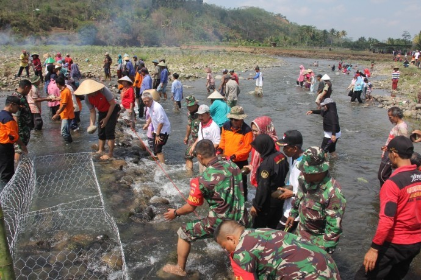
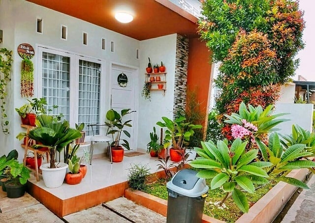
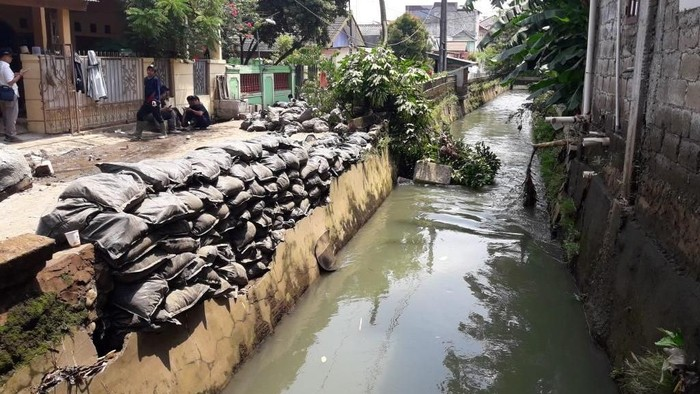

1. Gotong Royong Mencegah Banjir

Bencana banjir merupakan salah satu bencana yang sudah akrab ketika memasuki musim penghujan.
Beberapa daerah di Indonesia menjadi daerah langganan banjir. Oleh sebab itu kita sebagai masyarakat harus bisa mencegahnya.
Pemberitahuan terkait pentingnya menjaga lingkungan merupakan hal yang perlu diperhatikan oleh warga untuk bisa mencegah banjir
Klik untuk melihat selengkapnya
Bencana banjir merupakan salah satu bencana yang sudah akrab ketika memasuki musim penghujan.
Beberapa daerah di Indonesia menjadi daerah langganan banjir. Oleh sebab itu kita sebagai masyarakat harus bisa mencegahnya.
Pemberitahuan terkait pentingnya menjaga lingkungan merupakan hal yang perlu diperhatikan oleh warga untuk bisa mencegah banjir.
Banjir terjadi bukan hanya hujan deras. Namun terjadi juga karena faktor manusia seperti tidak membuang sampah sembarangan
dan tidak menjaga saluran air sehingga memperparah kondisi banjir yang terjadi. Salah satu langkah untuk meningkatkan kesadaran masyarakat
dalam menjaga lingkungan agar bisa mencegah terjadinya banjir adalah melakukan sosialisasi Masyarakat di lingkungan sekitar
yang bisa diarahkan oleh ketua RT setempat untuk melakukan gotong royong seminggu sekali.
Contoh kegiatan yang dapat dilakukan ialah membersihkan saluran air. Banjir bisa terjadi karena saluran air yang tidak bekerja sesuai fungsinya.
Hal tersebut bisa terjadi karena rusak atau mampet karena sampah. Saluran air yang langsung terhubung ke sebuah sungai biasanya
rentan tertutup sampah dan sangat berbahaya jika terjadi hujan deras karena air akan meluap.
Oleh sebab itu tidak ada salahnya untuk gotong royong bersama tetangga untuk membersihkan saluran air.
Sehingga nanti saat hujan air akan mengalir dan tidak tertahan yang menjadi penyebab utama banjir.
Pembersihan tersebut harus dilakukan secara berkala . Hide Detail
2. Membuat Taman Di Rumah

Genangan air dan banjir adalah suatu permasalahan yang terjadi ketika memasuki musim penghujan.
Terkadang hal tersebut membuat kita sebagai pemilik rumah menjadi resah. Untuk itu kami memberikan
beberapa cara agar dapat meminimalisir terjadinya genangan air dan banjir yang terjadi di sekitar area rumah anda.
Seperti memanfaatkan lahan sempit maupun luas di teras untuk dijadikan space green di area rumah.
Hal ini dapat kita maksimalkan dengan menanam pepohonan. Selain itu, sirkulasi udara menjadi sangat baik di rumah anda
Klik untuk melihat selengkapnya
Seperti memanfaatkan lahan sempit maupun luas di teras untuk dijadikan space green di area rumah.
Hal ini dapat kita maksimalkan dengan menanam pepohonan. Selain itu, sirkulasi udara menjadi sangat baik di rumah anda
Cara mengatasi banjir dengan memperbanyak pohon mungkin kedengarannya klasik, padahal dapat dilakukan dengan cara yang lebih sederhana.
Adanya pepohonan maupun tanaman lainnya mampu mencegah banjir karena memiliki akar yang mampu menyerap air dengan baik.
Sebaliknya jika tak ada tumbuh-tumbuhan atau vegetasi apapun di atas tanah, penyerapan jadi kurang baik dan berakibat
air susah tertampung karena tidak adanya akar yang menahan laju air.
Membuat sebuah taman kecil yang berisi berbagai macam tanaman, tujuannya tak hanya menghindari banjir,
tetapi juga menambah estetika pada lingkungan sekitar rumah. Contoh pohon yang dapat ditanam dan mampu memberikan banyak manfaat, misalnya mangga, jambu, cempedak, akar wangi, dan lain sebagainya.
Hide Detail
3. Tumpuk Karung Pasir Dekat Sungai/Selokan

Cara mengatasi banjir juga dapat dilakukan dengan menumpuk karung pasir di pinggir sungai ataupun selokan.
Apabila menerapkan cara seperti ini, air tidak langsung meluap ke daratan. Akan tetapi menyerap ke pasir terlebih dahulu,
sehingga pergerakannya ke pemukiman jadi lebih lambat karena terdapat penghalang tersebut, maka gunakanlah karung berisi pasir penuh,
usahakan tidak bolong supaya air tidak mudah merembes. Letakkan beberapa tumpuk sesuai kebutuhan di sepanjang sungai maupun selokan yang mudah meluap airnya.
Klik untuk melihat selengkapnya
Meski tampak sederhana, membuat tanggul dengan kantung-kantung berisi pasir terbukti efektif menghalau air masuk ke dalam rumah.
Sebenarnya, tanggul berfungsi untuk mengalihkan aliran air. Meski sementara, air tidak bisa masuk ke dalam rumah.
Akan tetapi, karena sifatnya sementara, tetap saja air tersebut pun harus dialirkan melalui selokan. Agar upaya pencegahan banjir efektif,
gunakan metode yang tepat. Metode tepat tidak hanya menghemat waktu, namun juga mampu membuat pekerjaan lebih efektif.
Terkait pembuatan tanggul di depan rumah, ada baiknya memperhatikan metode yang dirilis California Department of Water Resources dan California Conservation Corps.
Kedua lembaga tersebut, memberikan instruksi lengkap mengenai cara pembuatan tanggul. Anda hanya perlu mengisi karung dengan pasir atau tanah dan menempatkannya dengan tepat.
Membuat tanggul setidaknya membutuhkan dua orang. Satu orang untuk memegang karung agar tetap terbuka, sementara satu orang lainnya memasukkan pasir ke dalam karung.
Isilah hanya sepertiga karung. Usahakan menggunakan karung goni dengan anyaman rekat. Lipat sisa karung yang tidak terisi menjadi bentuk segitiga. Hal ini membuat pasir tidak mudah bocor.
Kemudian, tata karung-karung tersebut dan pastikan Anda membuat karung-karung tersebut saling tumpang tindih. Selain itu, pastikan juga sisi yang terlipat (yang tidak terbuka) menghadap arah datang air.
Tindih bagian lipatan dengan karung lain, dan ulangi hingga mencapai ketinggian yang Anda inginkan. Selain membuat tanggul, pastikan juga selokan di sekitar rumah Anda tidak dipenuhi oleh tanah dan sampah.
Pasalnya, air tetap harus mengalir dan hal tersebut tidak akan mungkin jika selokan penuh dengan sampah.
Hide Detail